Introduction
The work of my master’s thesis focused on estimation issues in latent class models. One area in particular that I started to explore was local solutions - solutions that an algorithm converges to when estimating a latent class model that don’t have the largest maximum likelihood (LL) across all of the iterations. In practice we only examine and report the solution with the largest maximum LL solution, which makes sense because we are trying to find parameters that are the closest to describing the observed data we have. However, in these past few years I have taken an interest in taking a closer look at these local solutions. Can information about their frequency or where they converge to shed light on the quality of our latent class model solution? While there have been simulation studies that study the relationship between class size, true parameter values, class prevalence size, and quality metrics of latent class models like bias or classification accuracy, we don’t know these variables in real life with empirical data. In my master’s thesis I showed that local solutions increased with worse data conditions, and in those same undesirable conditions the second best LL solution was also very close (often by a LL distance of .001) to the maximum LL solution. From my work and work from Shireman et al. (2016), there is weak evidence to suggest that local solutions can be informative..but I’m not satisfied! My simulation results rely
Method
ARI vs Classification Accuracy
CA and ARI are highly correlated when measurement error is low, but once measurement error is high ARI is a more conservative indicator. Based on the formulation of ARI this makes sense, as ARI accounts for the fact that individuals could be correctly classified due to chance. Thus, I will use ARI as the classification accuracy metric.
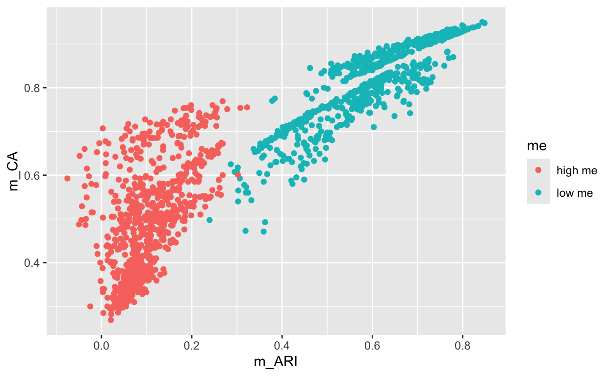
Relationship between local solutions, bias, and ARI
Based on the pairs plot, we can identify a few trends between the 3 variables. Percentage of unique solutions and bias are positively correlated, and it appears that there is a ceiling value of around .25 for bias.
ARI is bimodal, and there doesn’t seem to be a clear relationship between percentage of unique solutions and ARI for either mode. It’s possible to have low uniq_percentage and perfect or or super low ARI.
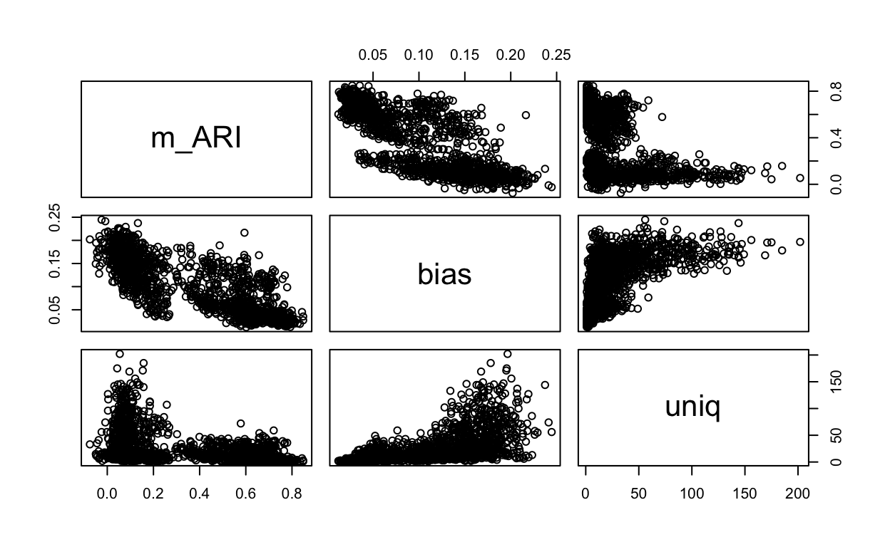
ARI is bimodal —split on extent of measurement error
When measurement error is low: high ARI almost guarantees low bias.., but just because ARI is low doesn’t mean that bias is going to be high…
When measurement error is high: even if ARI is low, like in the .2 range ..its still possible for bias to be low..
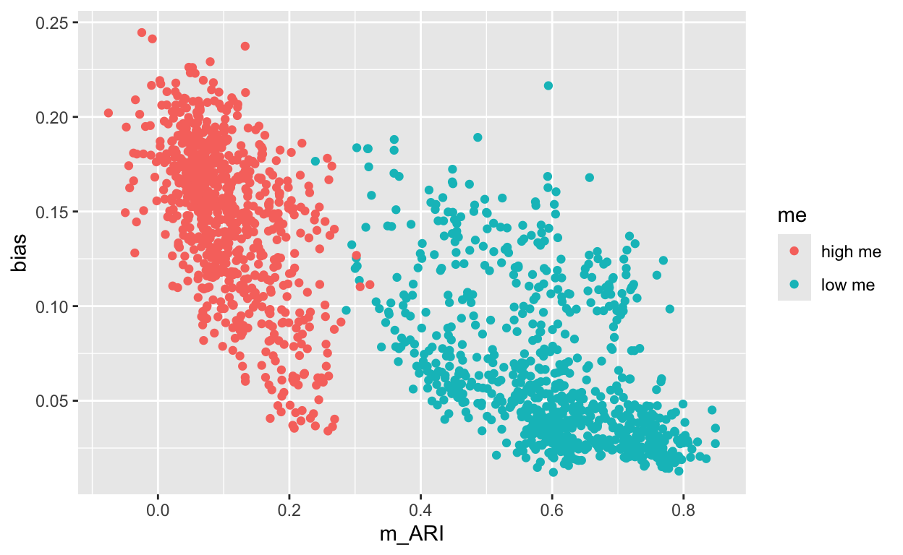
Simulation factors predicting bias and ARI
Much like what I found during my master’s thesis, measurement error explains most of the variation in bias. The number of classes also explains a lot too.
# Effect Size for ANOVA (Type III)
Parameter | Eta2 (partial) | 95% CI
-----------------------------------------
uniq | 0.03 | [0.01, 1.00]
ss | 0.47 | [0.23, 1.00]
me | 0.90 | [0.83, 1.00]
prev | 0.51 | [0.27, 1.00]
nclass | 0.67 | [0.50, 1.00]
nitem | 0.48 | [0.24, 1.00]
- One-sided CIs: upper bound fixed at [1.00].Linear mixed model fit by REML. t-tests use Satterthwaite's method [
lmerModLmerTest]
Formula: bias ~ uniq + ss + nitem + (1 | sim_number)
Data: fin
REML criterion at convergence: -7625.8
Scaled residuals:
Min 1Q Median 3Q Max
-3.3814 -0.5429 -0.0207 0.4771 4.2247
Random effects:
Groups Name Variance Std.Dev.
sim_number (Intercept) 0.0022575 0.04751
Residual 0.0004365 0.02089
Number of obs: 1600, groups: sim_number, 32
Fixed effects:
Estimate Std. Error df t value Pr(>|t|)
(Intercept) 7.435e-02 1.462e-02 2.880e+01 5.085 2.04e-05 ***
uniq 3.371e-04 4.732e-05 1.594e+03 7.125 1.57e-12 ***
sssmall 2.179e-02 1.685e-02 2.856e+01 1.294 0.206
nitem7 2.389e-02 1.684e-02 2.852e+01 1.418 0.167
---
Signif. codes: 0 '***' 0.001 '**' 0.01 '*' 0.05 '.' 0.1 ' ' 1
Correlation of Fixed Effects:
(Intr) uniq sssmll
uniq -0.078
sssmall -0.572 -0.044
nitem7 -0.578 0.035 -0.002Analysis of Deviance Table (Type III Wald chisquare tests)
Response: bias
Chisq Df Pr(>Chisq)
(Intercept) 25.8595 1 3.672e-07 ***
uniq 50.7622 1 1.043e-12 ***
ss 1.6734 1 0.1958
nitem 2.0118 1 0.1561
---
Signif. codes: 0 '***' 0.001 '**' 0.01 '*' 0.05 '.' 0.1 ' ' 1# Effect Size for ANOVA (Type III)
Parameter | Eta2 (partial) | 95% CI
-----------------------------------------
uniq | 0.03 | [0.02, 1.00]
ss | 0.06 | [0.00, 1.00]
nitem | 0.07 | [0.00, 1.00]
- One-sided CIs: upper bound fixed at [1.00].Linear mixed model fit by REML. t-tests use Satterthwaite's method [
lmerModLmerTest]
Formula:
m_ARI ~ uniq + ss + me + prev + nclass + nitem + (1 | sim_number)
Data: fin
REML criterion at convergence: -4525.6
Scaled residuals:
Min 1Q Median 3Q Max
-4.4334 -0.5030 0.0490 0.5356 3.8519
Random effects:
Groups Name Variance Std.Dev.
sim_number (Intercept) 0.002645 0.05143
Residual 0.003115 0.05581
Number of obs: 1600, groups: sim_number, 32
Fixed effects:
Estimate Std. Error df t value Pr(>|t|)
(Intercept) 1.986e-01 2.263e-02 2.631e+01 8.775 2.70e-09 ***
uniq -1.513e-04 1.255e-04 1.552e+03 -1.205 0.22828
sssmall -2.638e-02 1.850e-02 2.645e+01 -1.426 0.16565
melow me 4.928e-01 1.871e-02 2.762e+01 26.340 < 2e-16 ***
prevunequal 1.843e-02 1.841e-02 2.594e+01 1.001 0.32595
nclass5 -7.022e-02 1.897e-02 2.915e+01 -3.701 0.00089 ***
nitem7 -1.007e-01 1.846e-02 2.626e+01 -5.456 9.81e-06 ***
---
Signif. codes: 0 '***' 0.001 '**' 0.01 '*' 0.05 '.' 0.1 ' ' 1
Correlation of Fixed Effects:
(Intr) uniq sssmll melowm prvnql nclss5
uniq -0.092
sssmall -0.394 -0.106
melow me -0.417 0.182 -0.019
prevunequal -0.403 -0.034 0.004 -0.006
nclass5 -0.372 -0.245 0.026 -0.045 0.008
nitem7 -0.413 0.086 -0.009 0.016 -0.003 -0.021Analysis of Deviance Table (Type III Wald chisquare tests)
Response: m_ARI
Chisq Df Pr(>Chisq)
(Intercept) 77.0052 1 < 2.2e-16 ***
uniq 1.4527 1 0.2280979
ss 2.0326 1 0.1539578
me 693.8113 1 < 2.2e-16 ***
prev 1.0025 1 0.3167021
nclass 13.6974 1 0.0002148 ***
nitem 29.7677 1 4.87e-08 ***
---
Signif. codes: 0 '***' 0.001 '**' 0.01 '*' 0.05 '.' 0.1 ' ' 1# Effect Size for ANOVA (Type III)
Parameter | Eta2 (partial) | 95% CI
-----------------------------------------
uniq | 9.35e-04 | [0.00, 1.00]
ss | 0.07 | [0.00, 1.00]
me | 0.96 | [0.94, 1.00]
prev | 0.04 | [0.00, 1.00]
nclass | 0.32 | [0.10, 1.00]
nitem | 0.53 | [0.30, 1.00]
- One-sided CIs: upper bound fixed at [1.00].Are these bad rule of thumbs?
At 10% unique solutions - meaning about 50 different likelihood values - you’re more likely to have item parameters with high measurement error… high bias, poor classification… regardless of sample size and number of items
Having a larger sample size increases the changes that you have items with high measurement error IF THE PERCENTAGE OF UNIQUE SOLUTIONS IS HIGH.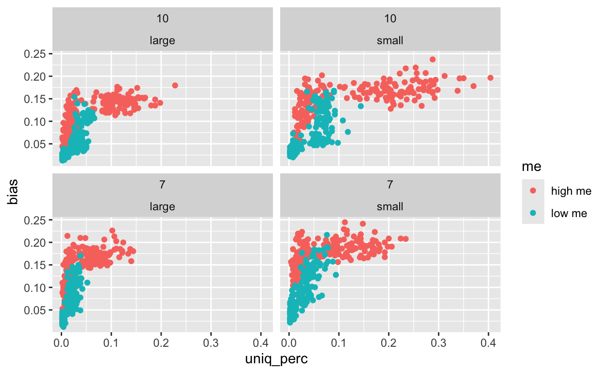
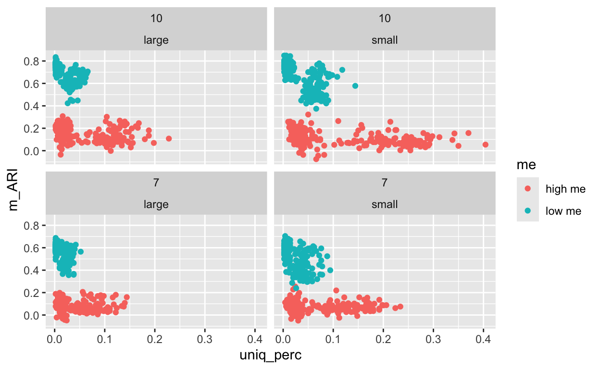
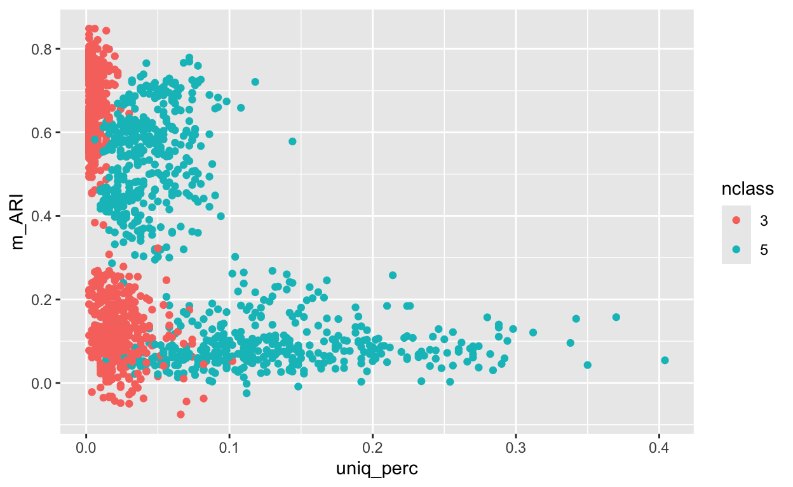
The correlation between percentage of unique solutions and bias is the strongest at .77 when
Compared to shireman et al who found 0 correlation between MSPE and proportion of unique solutions…… we have much higher! Shireman et al is a mixture model paper not a latent class one.[1] 0.6700061[1] 0.6962389[1] 0.7066418[1] 0.7657891Linear mixed model fit by REML. t-tests use Satterthwaite's method [
lmerModLmerTest]
Formula:
bias ~ max_n + ss + me + prev + nclass + nitem + (1 | sim_number)
Data: fin
REML criterion at convergence: -7720.5
Scaled residuals:
Min 1Q Median 3Q Max
-3.2997 -0.5618 -0.0406 0.4736 3.9574
Random effects:
Groups Name Variance Std.Dev.
sim_number (Intercept) 8.434e-05 0.009184
Residual 4.276e-04 0.020680
Number of obs: 1600, groups: sim_number, 32
Fixed effects:
Estimate Std. Error df t value Pr(>|t|)
(Intercept) 1.029e-01 4.520e-03 3.473e+01 22.760 < 2e-16 ***
max_n -4.780e-05 5.116e-06 1.592e+03 -9.344 < 2e-16 ***
sssmall 2.520e-02 3.413e-03 2.559e+01 7.383 8.51e-08 ***
melow me -7.556e-02 3.525e-03 2.902e+01 -21.436 < 2e-16 ***
prevunequal 2.289e-02 3.420e-03 2.578e+01 6.692 4.42e-07 ***
nclass5 3.814e-02 3.637e-03 3.279e+01 10.487 5.24e-12 ***
nitem7 2.007e-02 3.408e-03 2.543e+01 5.890 3.57e-06 ***
---
Signif. codes: 0 '***' 0.001 '**' 0.01 '*' 0.05 '.' 0.1 ' ' 1
Correlation of Fixed Effects:
(Intr) max_n sssmll melowm prvnql nclss5
max_n -0.384
sssmall -0.399 0.058
melow me -0.266 -0.256 -0.015
prevunequal -0.408 0.085 0.005 -0.022
nclass5 -0.487 0.349 0.020 -0.089 0.030
nitem7 -0.372 -0.014 -0.001 0.004 -0.001 -0.005Analysis of Deviance Table (Type III Wald chisquare tests)
Response: bias
Chisq Df Pr(>Chisq)
(Intercept) 518.014 1 < 2.2e-16 ***
max_n 87.317 1 < 2.2e-16 ***
ss 54.510 1 1.546e-13 ***
me 459.489 1 < 2.2e-16 ***
prev 44.789 1 2.194e-11 ***
nclass 109.985 1 < 2.2e-16 ***
nitem 34.692 1 3.861e-09 ***
---
Signif. codes: 0 '***' 0.001 '**' 0.01 '*' 0.05 '.' 0.1 ' ' 1# Effect Size for ANOVA (Type III)
Parameter | Eta2 (partial) | 95% CI
-----------------------------------------
max_n | 0.05 | [0.04, 1.00]
ss | 0.68 | [0.49, 1.00]
me | 0.94 | [0.90, 1.00]
prev | 0.63 | [0.43, 1.00]
nclass | 0.77 | [0.65, 1.00]
nitem | 0.58 | [0.35, 1.00]
- One-sided CIs: upper bound fixed at [1.00].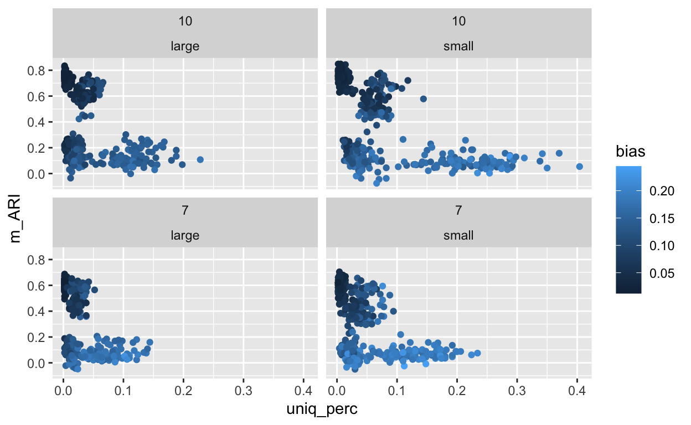
[1] -0.5302882[1] -0.4984876[1] -0.5719527[1] -0.5328275[1] -0.838787[1] -0.8364892[1] -0.8269074[1] -0.76896
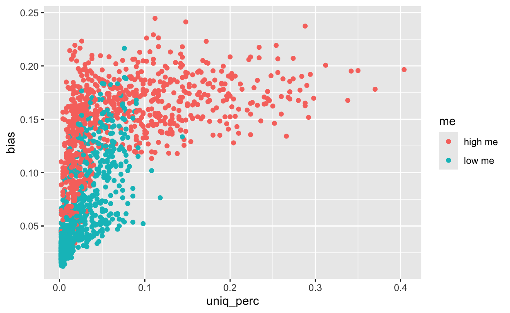
second LL analysis
relationship between distance to second LL and bias?
Just because the distance is 0 or small doesn’t suggest anything.. BUT if the distance of the second best LL is really big… probably a good sign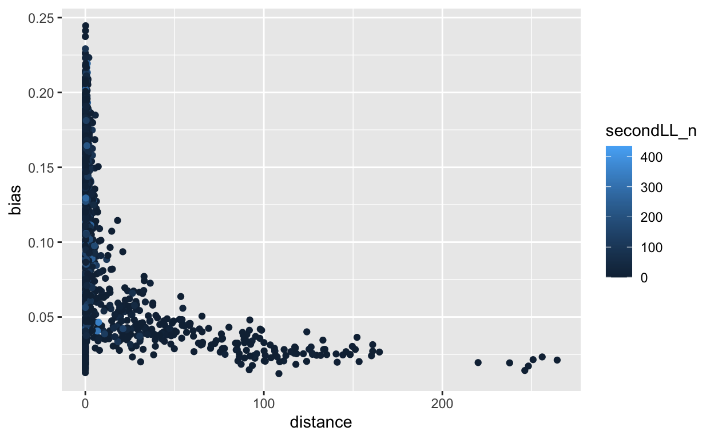
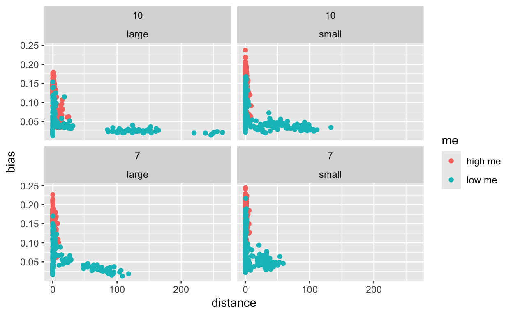
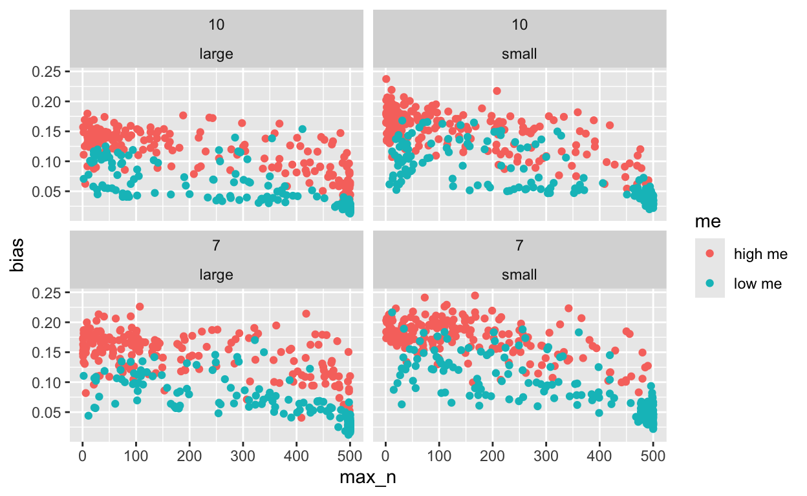